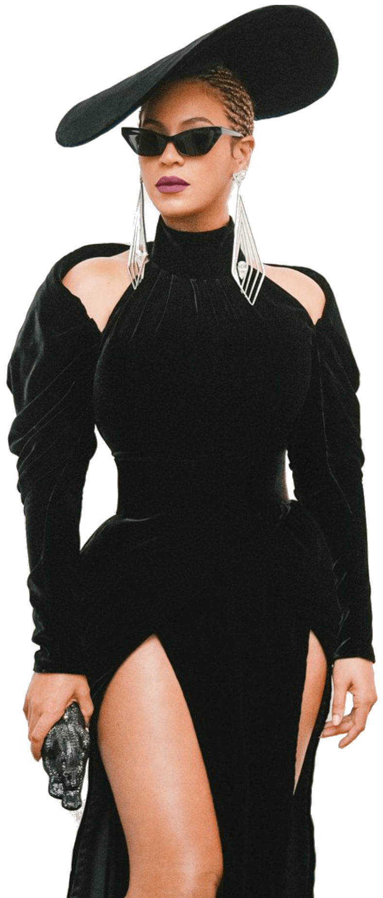
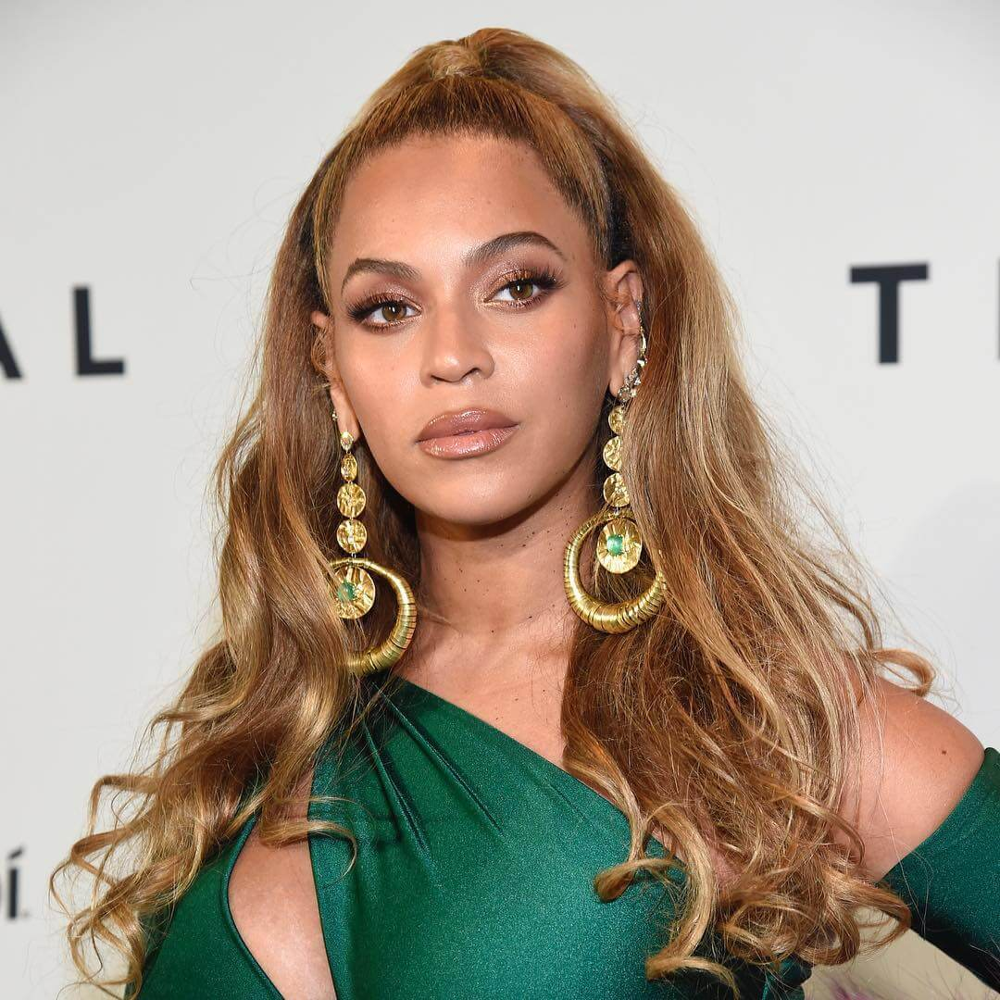
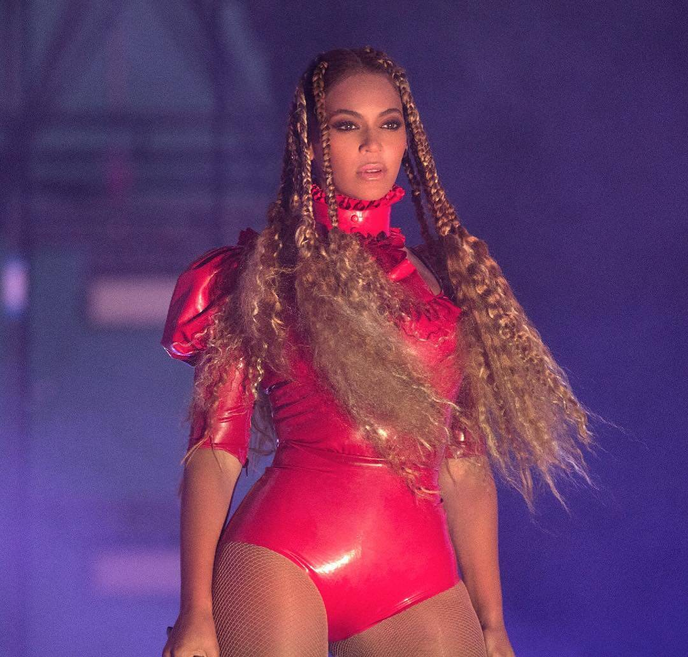
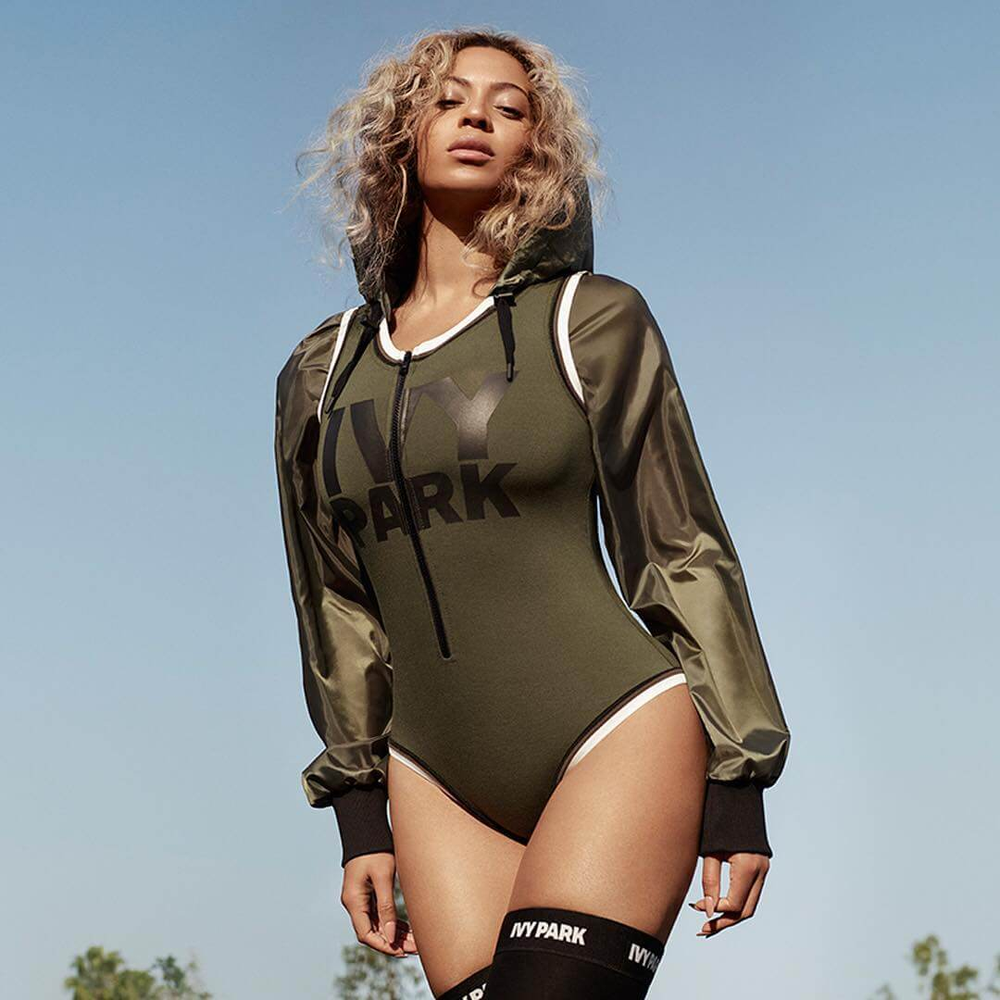
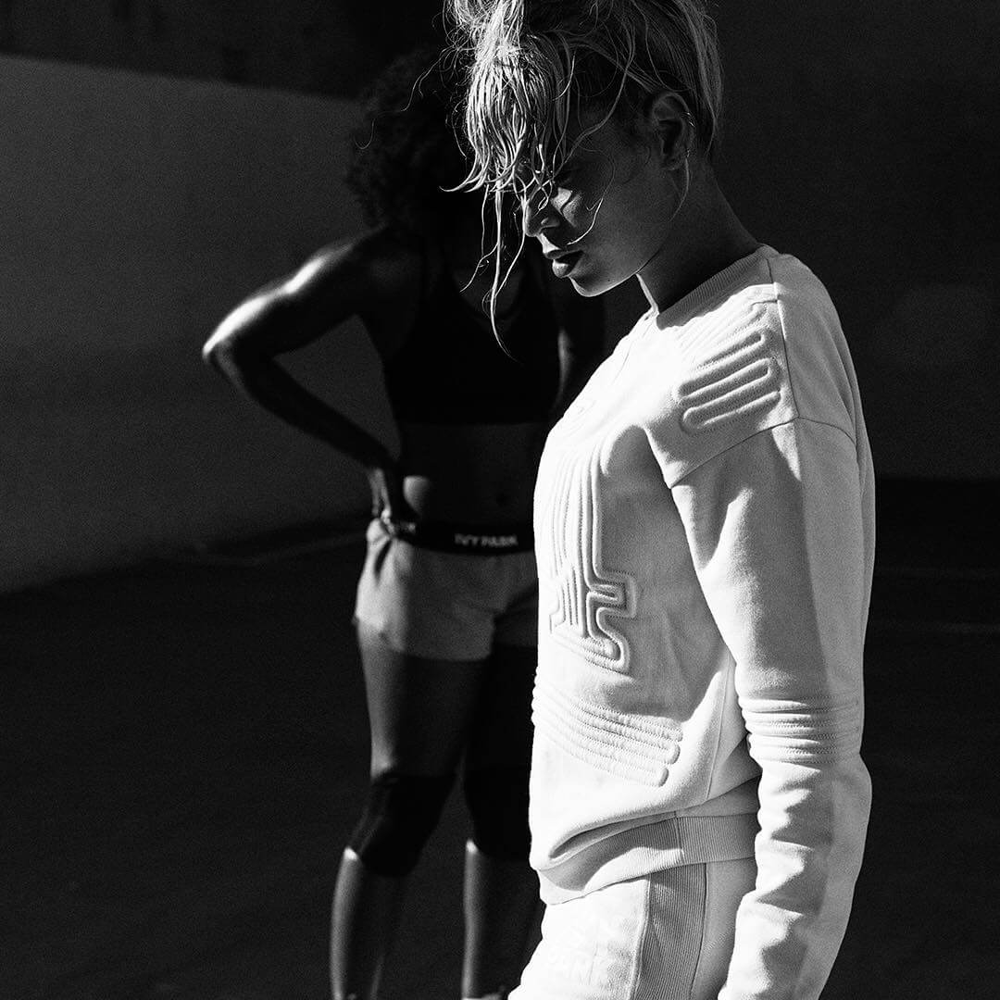
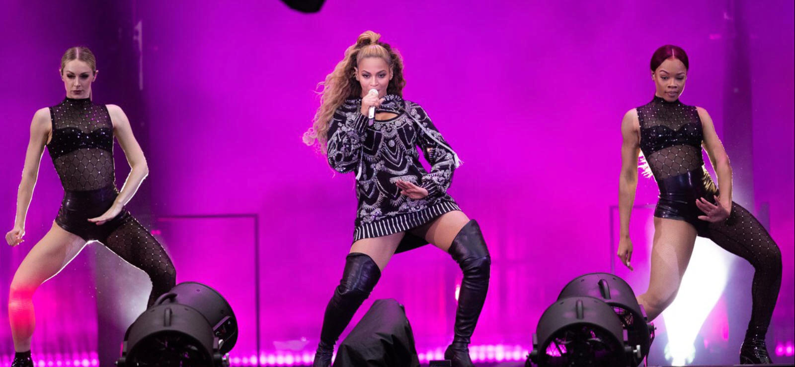

Beyoncé Wants to Change the Conversation
January 23 was a normal day for Beyoncé. On the docket:
- Showcase new athleisure line, Ivy Park 2. Plot launch of new music label
- Prepare to dominate Super Bowl 50
- Polish off top secret “Formation” video
- Gear up for all-stadium world tour
When “Run the world” is your business plan, your day starts early.
At exactly 5 a.m., Beyoncé Giselle Knowles-Carter arrives at Mimoda, a spare, mirror-walled, bare-floored dance studio in central Los Angeles that echoes the image she is here to disseminate: that of an athlete, suited up in a white jersey with a white mesh jacket, stripped of accessories and even shoes, hair teased into a corona of Flashdance curls. A woman who is here to work. Surrounded by a trio of dancers who've been backing her up for years, she rehearses, for the benefit of the camera, a slo-mo version of dance sequences that we later learn are part of “Formation.” In other shots, she stands alone, still and commanding, staring straight into the camera—without so much as an accidental blink. The atmosphere is relaxed, upbeat, as she and the dancers joke and laugh. But make no mistake: This is a tightly managed operation.
It's an operation run, down to the last detail, by a superstar-in-chief worth, according to Forbes, an estimated $250 million as of 2015. Among the operation's latest developments: Through a new music- label arm of her eight-year-old company, Parkwood Entertainment, Beyoncé will soon be delivering to the world a cadre of young artists whose sound and image she has personally groomed and fostered. (Get your first peek at them on page 260.) And then there's Ivy Park— not just another flash-in-the-pan celebrity collab, but rather a joint venture with Topshop that was years in the making, because when Beyoncé signs on, she gets her hands dirty: She shapes each project, she runs it, and, yes, she owns—or at least co-owns—it. And she expects its impact to extend beyond the fiscal. As far as its founder is concerned, Ivy Park isn't just a bunch of logo sweats, basketball-mesh ops, sheer-paneled bodysuits, and hyper-refined leggings; it's a way to push a feel-good, woman-power ethos, to de-emphasize perfectionism, to value strength over beauty, and to inspire, according to the company, “women to work with, not against, their bodies.” (BeyHive trivia alert: The singer's lucky number 4—the date of her birthday, Jay Z's birthday, and their wedding anniversary—appears subtly throughout; the name Ivy, too—shared, of course, by her four-year-old daughter, Blue Ivy—is inspired by the Roman numeral IV.) Beyoncé's measure of Ivy Park's success: “For me,” she says, “it won't be real until I see women at the gym, in the park, on the street wearing the collection, sweating in it, and loving it."
That the myth surrounding Beyoncé's identity, and her music, swells with each chapter of her career is due in large part to sheer prowess: She's the most-nominated woman in Grammy history, with 20 awards and 53 nominations. She has sold over 120 million solo albums. As she puts it herself in “Formation,” “Sometimes I go off, I go hard / Get what's mine, I'm a star / 'Cause I slay."
But the myth-building is also due, in part, to her relative silence. Yale professor Daphne A. Brooks noted in the New York Times last year, “She's been able to reach this level of stardom in which she's managed...hyper-visibility and inaccessibility simultaneously.” For three years, the singer has been all but mum in the press, letting the work speak for itself—cultivating a sense of mystery and, in this all-access era, an exotic remove that is itself a show of power—while scattering pixie-dust intimacies via (mostly captionless) pictures on Instagram.
So the fact that, two weeks after our shoot, she unleashed “Formation” without a whisper of promotion, was, of course, no surprise at all. That's just how Beyoncé rolls. Anyway, who needs prerelease buzz when you can rack up 7 million YouTube views in 24 hours without it? With arresting imagery—the singer sprawled atop a sinking New Orleans police car; a black young man—a child, really— dancing before a line of white police officers in riot gear; Blue Ivy swaying sweetly to the lyric “I like my baby hair, with baby hair and Afros / I like my Negro nose with Jackson 5 nostrils"—the video instantly became part of ongoing public discourse about race and criminal-justice reform in America. While some police accused her of baiting them, others, like the Tampa police department, have been taking to Twitter to defend her ("What?! @TampaPD officers have been in #formation for days signing up to keep the #Beehive [sic] safe! #Truth #Fact"). As with most things Beyoncé does—change her hair, write a love song to her husband—there wasn't anybody without a point of view on what Beyoncé should or shouldn't do.
With “Formation,” Beyoncé declared herself an artist willing to use her power to provoke difficult but necessary conversations about the most fraught topics in American life. In other words, she's not just going to keep wearing her crown, she's going to keep earning it—"I dream it, I work hard, I grind till I own it"—every step of the way. Here, she talks about what people don't understand about her work, and why even designing a line of leggings can be a feminist act.
Let's start with Ivy Park. How long has that been in the works?
I've been shopping at Topshop for probably 10 years now. It's one of the only places where I can actually shop by myself. It makes me feel like a teenager. Whenever I was in London, it was like a ritual for me—I'd put my hat down low and have a good time getting lost in clothes. I think having a child and growing older made me get more into health and fitness. I realized that there wasn't really an athletic brand for women like myself or my dancers or friends. Nothing aspirational for girls like my daughter. I thought of Ivy Park as an idyllic place for women like us. I reached out to Topshop and met with Sir Philip Green [chief executive of its parent company, Arcadia]. I think he was originally thinking I wanted to do an endorsement deal like they'd done with other celebrities, but I wanted a joint venture. I presented him with the idea, the mission statement, the purpose, the marketing strategy—all in the first meeting. I think he was pretty blown away, and he agreed to the 50-50 partnership.
You've done fashion lines before. What have you learned from this one?
I've learned that you have to be prepared. And when you visualize something, you have to commit and put in the work. We had countless meetings; we searched for and auditioned designers for months. I knew the engineering of the fabric and the fit had to be the first priority. We really took our time, developed custom technical fabrics, and tried to focus on pushing athleticwear further. And because I've spent my life training and rehearsing, I was very particular about what I wanted. I'm sweating, I'm doing flips—so we designed a high-waist legging that's flattering when you're really moving around and pushing yourself.
Which details are you most excited about in the collection?
There's an invisible underlining in our garments that sucks you in and lifts your bottom so that when you're on a bike, or when you're running or jumping, you don't feel that extra reverb. And there are little things, like where a top hits under your arms, and all of the areas on a woman's body we're constantly working on. I was so specific about the things I feel I need in a garment as a curvy woman, and just as a woman in general, so you feel safe and covered but also sexy. Everything lifts and sucks in your waist and enhances the female form. We mixed in some features found in men's sportswear that I wished were interpreted into girls' clothes. We worked on the straps, making them more durable for maximum support. But the foundation for me is the fit and the engineering of technically advanced, breathable fabrics.
How important was the ethos of the brand—the idea of self-love, of girls and women coming together?
It's really the essence: to celebrate every woman and the body she's in while always striving to be better. I called it Ivy Park because a park is our commonality. We can all go there; we're all welcomed. It's anywhere we create for ourselves. For me, it's the place that my drive comes from. I think we all have that place we go to when we need to fight through something, set our goals and accomplish them.
You've talked in the past about the pressure of perfectionism.
It's really about changing the conversation. It's not about perfection. It's about purpose. We have to care about our bodies and what we put in them. Women have to take the time to focus on our mental health—take time for self, for the spiritual, without feeling guilty or selfish. The world will see you the way you see you, and treat you the way you treat yourself.
How do you feel about the role of business-woman, running your own company?
It's exciting, but having the power to make every final decision and being accountable for them is definitely a burden and a blessing. To me, power is making things happen without asking for permission. It's affecting the way people perceive themselves and the world around them. It's making people stand up with pride.
Did becoming a mother intensify that desire to make the world somehow better?
Of course. I think just like any mother, I just want my child to be happy and healthy and have the opportunity to realize her dreams.
How do you want to make things different for her generation?
I'd like to help remove the pressure society puts on people to fit in a certain box.
What lessons did your parents teach you?
So many...the gift of being generous and taking care of others. It has never left me. I've also learned that your time is the most valuable asset you own, and you have to use it wisely. My parents taught me how to work hard and smart. Both were entrepreneurs; I watched them struggle working 18-hour days. They taught me that nothing worth having comes easily. My father stressed discipline and was tough with me. He pushed me to be a leader and an independent thinker. My mother loved me unconditionally, so I felt safe enough to dream. I learned the importance of honoring my word and commitments from her. One of the best things about my mother is her ability to sense when I am going through a tough time. She texts me the most powerful prayers, and they always come right when I need them. I know I'm tapped into her emotional Wi-Fi.
During the Mrs. Carter Show tour, you seemed to embrace your power in a new way—blazing the word 'feminist' in bold pink letters across stadium screens. What made you decide to embrace the term?
I put the definition of feminist in my song ["Flawless"] and on my tour, not for propaganda or to proclaim to the world that I'm a feminist, but to give clarity to the true meaning. I'm not really sure people know or understand what a feminist is, but it's very simple. It's someone who believes in equal rights for men and women. I don't understand the negative connotation of the word, or why it should exclude the opposite sex. If you are a man who believes your daughter should have the same opportunities and rights as your son, then you're a feminist. We need men and women to understand the double standards that still exist in this world, and we need to have a real conversation so we can begin to make changes. Ask anyone, man or woman, "Do you want your daughter to have 75 cents when she deserves $1?" What do you think the answer would be? When we talk about equal rights, there are issues that face women disproportionately. That is why I wanted to work with [the philanthropic organizations] Chime for Change and Global Citizen. They understand how issues related to education, health, and sanitation around the world affect a woman's entire existence and that of her children. They're putting programs in place to help those young girls who literally face death because they want to learn, and to prevent women from dying during childbirth because there's no access to health care. Working to make those inequalities go away is being a feminist, but more importantly, it makes me a humanist. I don't like or embrace any label. I don't want calling myself a feminist to make it feel like that's my one priority, over racism or sexism or anything else. I'm just exhausted by labels and tired of being boxed in. If you believe in equal rights, the same way society allows a man to express his darkness, to express his pain, to express his sexuality, to express his opinion—I feel that women have the same rights.
What do you have to say to those who feel you can't be a feminist and also embrace your femininity?
We all know that's not true. Choosing to be a feminist has nothing to do with your femininity—or, for that matter, your masculinity. We're not all just one thing. Everyone who believes in equal rights for men and women doesn't speak the same, or dress the same, or think the same. If a man can do it, a woman should be able to. It's that simple. If your son can do it, your daughter should be able to. Some of the things that we teach our daughters—allowing them to express their emotions, their pain and vulnerability—we need to allow and support our men and boys to do as well.
Do you recall a point in your life when you realized you had real power?
I'd say I discovered my power after the first Destiny's Child album. The label didn't really believe we were pop stars. They underestimated us, and because of that, they allowed us to write our own songs and write our own video treatments. It ended up being the best thing, because that's when I became an artist and took control. It wasn't a conscious thing. It was because we had a vision for ourselves and nobody really cared to ask us what our vision was. So we created it on our own, and once it was successful, I realized that we had the power to create whatever vision we wanted for ourselves. We didn't have to go through other writers or have the label create our launch plans—we had the power to create those things ourselves.
What do you feel people don't understand about who you really are, and in particular about the message you've put forward with "Formation"?
I mean, I'm an artist and I think the most powerful art is usually misunderstood. But anyone who perceives my message as anti-police is completely mistaken. I have so much admiration and respect for officers and the families of officers who sacrifice themselves to keep us safe. But let's be clear: I am against police brutality and injustice. Those are two separate things. If celebrating my roots and culture during Black History Month made anyone uncomfortable, those feelings were there long before a video and long before me. I'm proud of what we created and I'm proud to be a part of a conversation that is pushing things forward in a positive way.
What do you want to accomplish with the next phase of your career?
I hope I can create art that helps people heal. Art that makes people feel proud of their struggle. Everyone experiences pain, but sometimes you need to be uncomfortable to transform. Pain is not pretty, but I wasn't able to hold my daughter in my arms until I experienced the pain of childbirth!